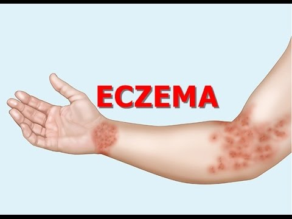

Типи екземи
Для так званої істинної екземи характерні гострий початок, різноманітна локалізація процесу, у тому числі ураження нігтів, симетричність осередків запалення, що не мають чітких меж, набряклість та почервоніння шкіри у області ураження, поява дрібних пухирців, які згодом частково перетворюються на гнійнички чи мокнучі ділянки (звідси застаріла назва екземи — мокріючий лишай) з наступним утворенням лусочок та шкоринок. При мікробній (близьраневій) екземі зони запалення, зазвичай, розташовані асиметрично, переважно на кінцівках, мають різкі нерівні межі; шкіра у зоні ураження синюшно-червоного кольору, ущільнена, наявні гнійничкові та ін. висипання, мокнучі ділянки, гнійні та кров'янисті шкуринки. При так званій дизгідротичній екземі головним чином на долонях, підошвах, бокових поверхнях пальців спостерігаються почервоніння шкіри, набряклість, численні пухирці, вузлики, гнійнички, мокнучі ділянки. Себорейна екзема локалізується переважно на шкірі волосистої частини голови, лоба, грудей, за вушними раковинами, в носогубних, пахвових та пахових складках, навколо пупка. На волосистій частині голови — почервоніння, сухість шкіри, пороття сіруватих лусочок та серозно-гнійних скоринок, під якими мокнуча поверхня; в області складок більш виражені почервоніння, набряк, можливі болісні тріщини; на тілі — жовтувато-рожеві чітко окреслені злущені плями, в центрі деяких з них — дрібновузелкові елементи. Лікування залежить від причини та форми екземи: заспокійливі засоби (препарати валеріани, транквілізатори), вітаміни (B1,B6,C та ін.), десенсибілізуючі препарати та ін., дієта, курортотерапія; місцево призначають примочки, пасти, мазі та засоби проти свербіння. При лікуванні екземи застосовуються магнітотерапію.